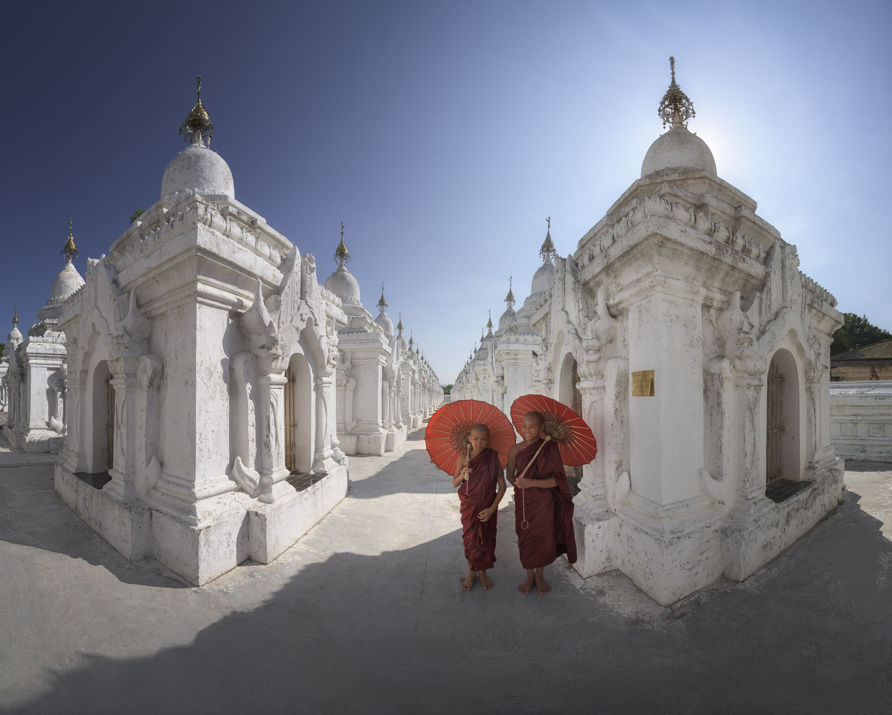

ကုသိုလ်တော်ဘုရား သည် မန္တလေးတောင်၏ အရှေ့တောင်ဘက်တွင် တည်ရှိပြီး မင်းတုန်းမင်း၏ ကုသိုလ်တော် ဖြစ်သည်။ မြန်မာသက္ကရာဇ် ၁၂၂၄ ဝါဆိုလတွင် မင်းတုန်းမင်း တည်ထားကိုးကွယ်ခဲ့သော ဘုရားဖြစ်ပြီး ဘွဲ့အမည်မှာ မဟာလောကမာရဇိန် ဖြစ်သည်။ တံတိုင်း ၃ ထပ်ရှိပြီး ဖိနပ်ခင်းအချင်း သံတောင် ၆၅၊ အရပ်တော် သံတောင် ၅၀၊ ၁ မိုက် ၄ သစ်ရှိသည်။
ကျောက်စာတိုင်များ များသောကြောင့် ကမ္ဘာ့အကြီးဆုံးစာအုပ် ဟုတင်စားရေးသားကြသည်။ကျောက်စာများကို ကူသိုလ်တော် ဘုရားကြီးရဲ့ ပထမ မဟာရံတံတိုင်းအတွင်းမှာ ၄၂ ချပ်၊ ဒုတိယ မဟာရံတံတိုင်းအတွင်းမှာ ၁၆၈ ချပ်၊ တတိယ မဟာရံတံတိုင်းအတွင်းမှာ ၅၁၉ ချပ်၊ ကျောက်စာတစ်ချပ်ကို သီဟိုဠ် စွယ်တော်ကြုတ်ပုံ အုတ်ပြာသာဒ် တစ်ခုစီအတွင်းမှာ မြေဝင်တစ်တောင်ထားပြီး အခိုင်အမာ စိုက်ထူထားပါတယ်။
ပထမ မဟာရံတံတိုင်းအတွင်းက အင်္ဂါထောင့်မှာတော့ ပိဋကတ်တော်သုံးပုံ ပါဠိတော်တွေကို ကျောက်ထက် အက္ခရာ တင်တဲ့အကြောင်း သံပိုင်းမော်ကွန်းနိဂုံး ကျောက်စာကြီးတစ်ချပ်ရေးထိုးစိုက်ထူထားပါသည်။ ထိုကြောင့် ကျောက်စာပေါင်း ၇၃၀ ရှိသည်။
မန္တလေးမြို့တွင်တည်ရှိသည့် မဟာမြတ်မုနိ သည် မြန်မာနိုင်ငံ၏ အရေးပါသော ဘုရားကျောင်းတော်များထဲမှ တစ်ခုဖြစ်ပြီး သမိုင်းဝင်ဓလေ့အလေ့များနှင့် ဗုဒ္ဓဘာသာယဉ်ကျေးမှုကို ရှုမြင်နိုင်သည့် နေရာအဖြစ် လူသိများသည်။ မုနိဘုရား၏ မုနိရုပ်ကြီးကို ထင်ရှားစွာ တည်ဆောက်ထားပြီး ခရီးသွားများနှင့် ဒေသခံများအတွက် ဘုရားရှုခင်း၊ သက်တမ်းရှည်သော ဗုဒ္ဓပုံများနှင့် ဓလေ့ထုံးစံများကို လေ့လာနိုင်သည်။
ကျောက်စိမ်းများနှင့် ရုပ်ပုံထိုးထားသည့် အနုပညာလက်ရာများသည် မြန်မာ့ရိုးရာအရ ထူးခြားမှုရှိပြီး သမိုင်းကြောင်းကိုလည်း ဖော်ပြထားသည်။ ဤနေရာတွင် သာသနာရေးပြုမှုများပြုလုပ်ရန်၊ ဆုတောင်းရန်နှင့် ဗုဒ္ဓဘာသာ၏ သင်ကြားချက်များကို လေ့လာရန် အထူးသင့်လျော်သည်။
ခရီးသွားများအနေဖြင့် မဟာမြတ်မုနိ သို့ ရောက်လျှင် ပုံရိပ်အလှများကို ရိုက်ကူးပြီး သမိုင်းဝင်အနုပညာ နေရာများကို လေ့လာနိုင်ကြသည်။ ထို့အပြင် နှစ်ပေါင်းများစွာကြာအောင် ဆောက်လုပ်ထားသည့် ဗုဒ္ဓပုံကြီးများ၊ သမိုင်းဝင်ကျောက်စိမ်းပုံများနှင့် ထူးခြားသော အနုပညာလက်ရာများကြောင့် ခရီးသွားများအတွက် ယဉ်ကျေးမှုလေ့လာမှုကို ရနိုင်သည်။
မန္တလေးနန်းတော် သည် မန္တလေးမြို့တွင်တည်ရှိပြီး ကုန်းဘောင်မင်းဆက်၏ နောက်ဆုံးနန်းတော်ဖြစ်သည်။ မင်းတုန်းမင်းသည် မန္တလေးမြို့တော်သစ်ကို တည်သောအခါ တပါတည်း နန်းတော်ကိုပါ ၁၈၅၇ နှင့် ၁၈၅၉-ခုနှစ်အတွင်း တည်ဆောက်ခဲ့သည်။ မန္တလေးနန်းတော်၏ ပုံစံသည် ယခင်နန်းတော်ဟောင်းများအတိုင်းဖြစ်ပြီး မြို့ရိုးနှင့် ကျုံးတို့က ဝန်းရံထားသည်။
နန်းတော်သည် ဝင်းအလယ်ဗဟိုတွင် တည်ရှိပြီး အရှေ့ဘက်ကို မျက်နှာမူထားသည်။ နန်းဆောင်အားလုံးမှာ တစ်ထပ်သာဖြစ်ကြသည်။ နန်းဆောင်ပေါ်ရှိ ပြာသာဒ်အဆင့် အရေအတွက်သည် အဆောင်ပိုင်ရှင်၏ အရေးပါမှုကို ပြသည်။
ယနေ့အခါ မန္တလေးနန်းတော်သည် နိုင်ငံခြားသားများ လည်ပတ်ရာ အဓိကနေရာအဖြစ် တည်ရှိနေသည်။ ရှေးမြန်မာမြို့တော်ဟောင်း၏ မြို့ရိုးဟောင်း၊ ၊ မြို့ရိုးပျက်များကို ယခုတိုင်တွေ့မြင်နိုင်ပေသေးသည်။
နန်းတော်၏ အမည်ကို မြနန်းစံကျော် ရွှေနန်းတော် ဟု တရားဝင်ထုတ်ပြန်သော အမိန့်တော်များတွင် တွေ့ရသည်။ ရွှေနန်းတော်ကြီးဟုလည်း ခေါ်သည်။ နန်းမြို့ကိုမူ လေးကျွန်းအောင်မြေဟု သမုတ်တော်မူသည်။